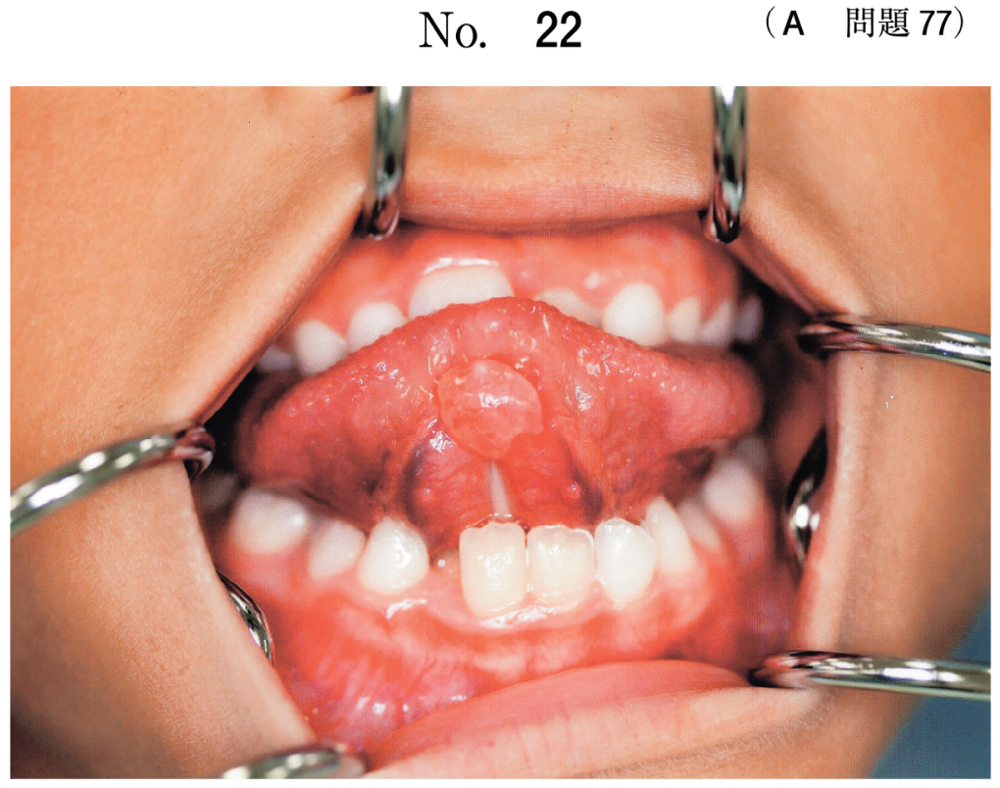

外傷の診査・診断
乳歯外傷の特徴（頻出）
乳歯外傷の特徴
- 好発部位：上顎前歯（下顎ではない）
- 好発時期：乳歯萌出期（1〜3歳）
- 性差：男児に多い
- 原因：転倒が最多（衝突ではない）
- 損傷タイプ：脱臼が破折より多い
乳歯外傷と永久歯外傷の違い
| 乳歯外傷 | 永久歯外傷 | |
|---|---|---|
| 損傷タイプ | 脱臼 ＞ 破折 | 破折 ＞ 脱臼 |
| 理由 | 歯根が短く、歯槽骨が軟らかい | 歯根が長く、歯槽骨が硬い |
外傷歯の検査
- 透照診：歯冠破折の確認
- 動揺度検査：脱臼の評価
- 口内法エックス線検査：歯根破折、脱臼の確認
- 歯髄電気診：乳歯では信頼性が低い
- 歯周ポケット検査：外傷では不要
後継永久歯への影響（頻出）
乳歯外傷による影響
- 萌出遅延
- 萌出位置異常
- 歯根形成不全
- 歯胚発育停止
- エナメル質形成不全（ターナー歯）
歯根内部吸収は後継永久歯への影響ではなく、外傷歯自体の変化
過去問
114A44
乳歯外傷の特徴はどれか。1つ選べ。
a 上顎より下顎に多い。
b 男児より女児に多い。
c 転倒より衝突が多い。
d 破折より脱臼が多い。
e 2歳児より5歳児に多い。
b 男児より女児に多い。
c 転倒より衝突が多い。
d 破折より脱臼が多い。
e 2歳児より5歳児に多い。
正解：d
【解説】乳歯外傷は脱臼が破折より多い。上顎前歯に多く、男児に多い。原因は転倒が最多。乳歯萌出期（1〜3歳）に好発。
103C87
乳歯外傷の特徴はどれか。1つ選べ。
a 下顎前歯に多い。
b 乳歯萌出期に多い。
c 脱臼よりも破折が多い。
d 歯髄電気診の信頼性が高い。
e 原因の50%以上が衝突である。
b 乳歯萌出期に多い。
c 脱臼よりも破折が多い。
d 歯髄電気診の信頼性が高い。
e 原因の50%以上が衝突である。
正解：b
【解説】乳歯外傷は乳歯萌出期（1〜3歳）に多い。歩行が不安定な時期に転倒しやすいため。上顎前歯に多く、脱臼が破折より多い。乳歯では歯髄電気診の信頼性は低い。
115A30
乳歯外傷による後継永久歯への影響として考えられるのはどれか。4つ選べ。
a 萌出遅延
b 歯根形成不全
c 歯根内部吸収
d 歯胚発育停止
e 萌出位置異常
b 歯根形成不全
c 歯根内部吸収
d 歯胚発育停止
e 萌出位置異常
正解：a, b, d, e
【解説】乳歯外傷による後継永久歯への影響は萌出遅延、歯根形成不全、歯胚発育停止、萌出位置異常。歯根内部吸収は外傷歯自体の変化であり、後継永久歯への影響ではない。
104B46
4歳6か月の男児。上顎前歯部の打撲を主訴として来院した。1時間前に転倒したという。口腔以外に異常を認めない。口腔内写真（別冊No.45）を別に示す。行うべき検査はどれか。すべて選べ。

a 透照診
b 動揺度検査
c 歯髄電気診
d 歯周ポケット検査
e 口内法エックス線検査
b 動揺度検査
c 歯髄電気診
d 歯周ポケット検査
e 口内法エックス線検査
正解：a, b, e
【解説】外傷歯には透照診（歯冠破折の確認）、動揺度検査（脱臼の評価）、口内法X線検査（歯根破折・脱臼の確認）を行う。乳歯では歯髄電気診の信頼性が低い。歯周ポケット検査は外傷では不要。
111A84
5歳の男児。上顎前歯の動揺を主訴として来院した。1時間前にコンクリートの床で歯を強打したという。初診時の口腔内写真（別冊No.29A）とエックス線画像（別冊No.29B）を別に示す。上顎両側乳中切歯に認められる病的変化はどれか。1つ選べ。


a 陥 入
b 歯冠破折
c 歯根破折
d 舌側転位
e 歯冠—歯根破折
b 歯冠破折
c 歯根破折
d 舌側転位
e 歯冠—歯根破折
正解：c
【解説】X線で歯根に水平方向の透過像（破折線）が認められ、歯根破折と診断。動揺があり歯冠に異常がないため、歯根部での破折を疑いX線で確認する。